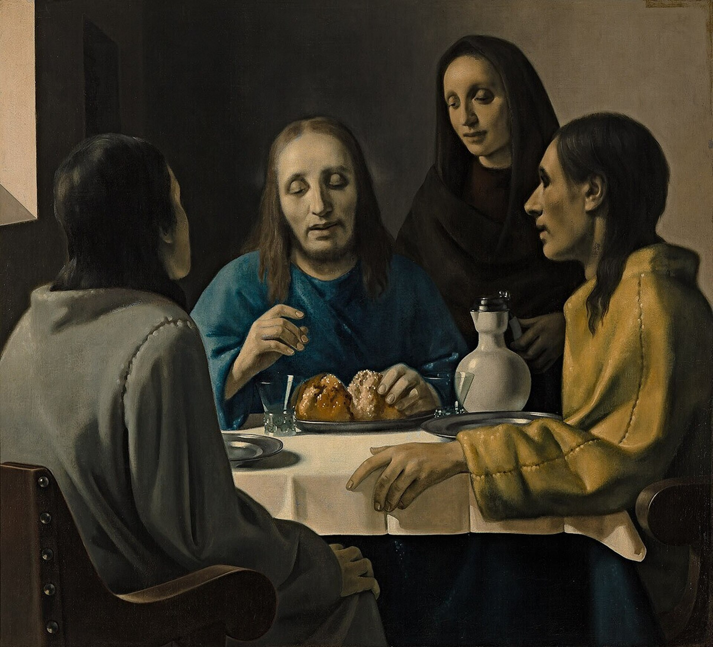

AN INTERACTIVE EXHIBITION · 1937
THE ART OF
DECEPTION
The story of Han van Meegeren

In 1937, a painting fooled the world's leading art experts. Could you do the same?
STAGE I
Prepare the Forgery
A convincing forgery needs to look centuries old. Time the ageing process carefully.
AGE THE CANVAS
Stop the marker inside the target area. The closer to the centre, the better your forgery.
✦ FIND THE PERFECT AGE ✦
Can You Fool Vermeer?
Recreate the painting as accurately as possible.
Reference
Your Painting
Your Vermeer Score
0%